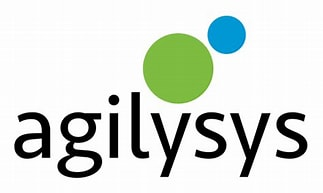
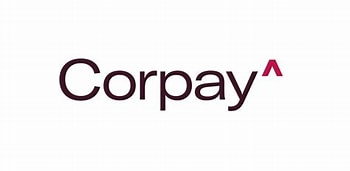
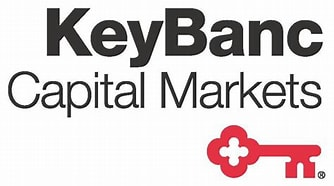
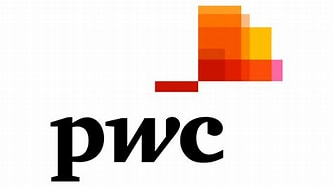

Experience

Overview: Leading hospitality software provider.
- Refined go-to-market strategy, segmented TAM, aligned vertical focus.
- Presented M&A strategy to Board; built acquisition models.

Overview: Global B2B payments company, Lodging Division (formerly FLEETCOR).
- Built 3- and 5-year growth plans across departments.
- Led $2M pricing engine initiative; added Air & Car product partnerships.
- Interim pricing lead; implemented revenue-positive changes.
Overview: Middle-market investment bank.
- Led execution across multiple sell-side transactions.
- Owned model builds, CIMs, Q&A, and buyer coordination.

Overview: Full-service investment bank for mid-market deals.
- Built LBO/DCFs, led diligence, refined CFO financials.
- Negotiated NDAs and supported deal marketing.

Overview: PE firm focused on lower-middle market manufacturing.
- Owned financial ops across fund entities and holdings.
- Acted as interim CFO; conducted deal and portfolio diligence.

Overview: Big Four audit work with tech clients (incl. Twitter).
- Led fieldwork; found material misstatements in audits.
- Built Excel/VBA tools to cut hours in half.
Overview: Two-year cross-cultural service mission.
- Fluent in Portuguese; led training and team logistics.
- Developed resilience and leadership in underserved areas.